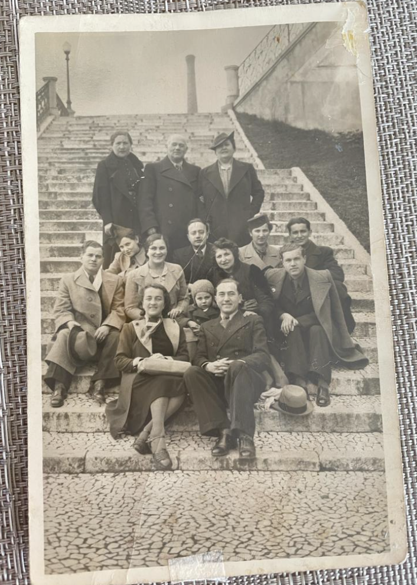
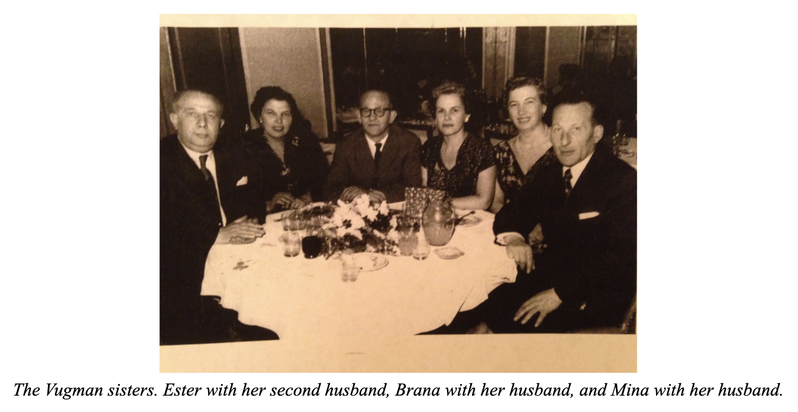
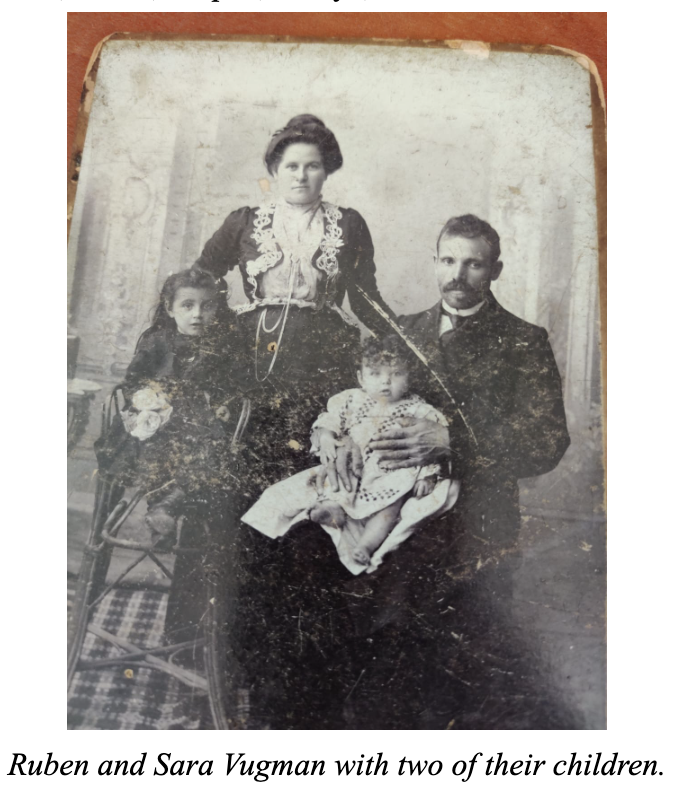
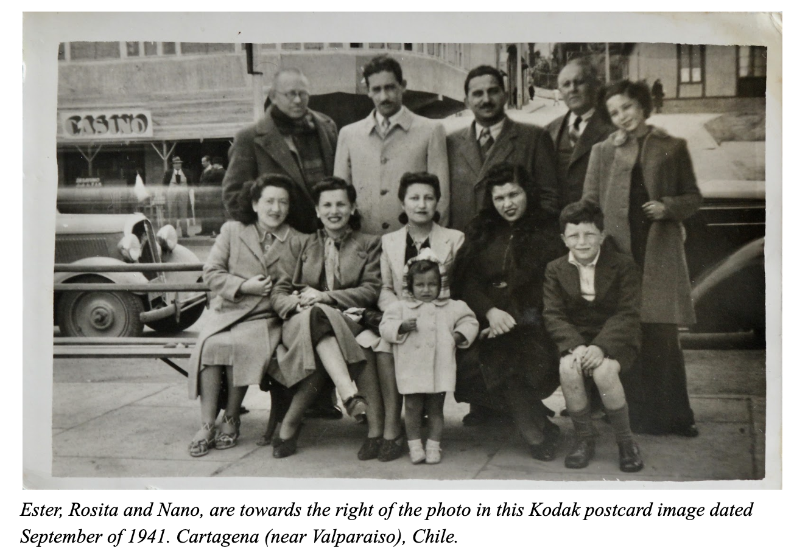

Rosita 0:00:00 Because the Second World War started in the middle of the year 1939. Eric 0:00:06 Yes, they arrived just after Hitler had invaded Czechoslovakia or something like that. Rosita 0:00:08 Yes, something like that. But evidently the preparations must have taken a long time, right? For them to arrive in Lisbon it shouldn't have been that easy. Eric 0:00:19 Yes, yes, I would really love to know more about that trip. One thing that Goyo told me was that when they arrived, it seems that they passed through France, Mina and Brana, on their way to Lisbon. And he told me that when they arrived in France, they sent all their money to Moldova, to their family. Because they thought it was made of gold, America. They had heard something like that. Rosita 0:00:52 It was made of what? Eric 0:00:54 Of gold.  Rosita 0:00:56 Of gold? Eric 0:00:58 That's what Goyo said, it seems. Rosita 0:01:00 I really don't have any memory of that part. I don't know what the ship was called. But you'll probably be able to find that, right? Yes, I think Lali knows that. And in fact, it seems that Lali works in a museum. Eric 0:01:12 She has several photos and a lot of information about the family that she managed to put in the museum. So I don't know when they will put it, but it will be on the internet. So I told her to let me know when they appear. But one thing that I would love to know, was, I don't know if you remember something about how your dad was and some details about Brana and Esther. I don't know if you remember anecdotes or stories? Rosita 0:02:02 Look, I remember an anecdote that was very curious to me, as I have not forgotten. I must have been, let's see, 10 or 11 years old. And, the truth is, Naya was married to Simon Bergsten. And I went to see the house, I imagine it was a walk for me, I don't know. And Brana seems to have gone to bathe or something like that. And then Simon called me so I could see her standing naked. I still don't understand the reason, but he called me to look at her as she saw her. Eric 0:02:56 Was he bragging about his wife? Rosita 0:03:00 I don't know. I remember her standing in the bathroom, naked, and I was looking at her. That's one of the... that could be called an anecdote. And then... Eric 0:03:21 That was when you were living in Santiago then. Rosita 0:03:23 Hello? Hello? Rosita 0:03:25 Well, as I was saying, when they had just gotten married, before having a child. Just married. How strange. Rosita 0:03:44 He was exhibiting her, I probably found her very pretty I think yes, I think it must be something like that... and she looked I remember she looked good. But like I say, I don't remember it anymore. I'm sure it would be very shocking. And the other thing, which can be anecdotal too, Rosita 0:04:13 About León's parents, Don Abraham and Mrs. Lea, those are León's parents. Eric Ah, I didn't know Leike was a nickname for Lea. ah I always called her Leike. Rosita 0:04:25 Leike. Leike is a... Let's see... A diminutive. Leike is how you call the Leas. Eric 0:04:31 It's like a nickname. Rosita 0:04:33 Yes, something like that. Leike. Well, they lived... Let's see, Leike and Don Abraham lived until Don Abraham died in an apartment on a street that is in, when arriving to Vicuña Mackenna. And in that same building, for many years, Brana lived with Simón and his children, in the same building. But it's not the same date. First Brana with her family, until they went to Israel. And, by chance, the same building where Leon's parents lived. There, well, they lived in that building, Sari, Lali, Osvaldo, in short. And he... I don't know. Eric 0:05:59 My dad always tells me that Abraham was very religious. Do you remember anything about that? Rosita 0:06:10 Abraham? Well, yes, Abraham read in all Jewish festivals, for example, in Pesach, you have to read, the four questions, and in short, there is a whole ritual. Well, he liked to do it when he was in the chapel. And of course, both the lady and Don Abraham were very observant. All the important parties, the high parties that are called, went to the temple. Eric 0:07:17 How would you describe Ester? Rosita 0:07:20 I think that... I would describe her more... I would say that she was more... more quiet. More quiet. And... No, more quiet. Look, I have... I remember that I have... Let's see, how can I tell you... My mom was married in the second announcement with a man of surname Poniachi, that's what I told you, right?  Eric 0:07:42 Yes, you told me that. Rosita 0:07:44 And she was married, how many years would it be? I don't know, four, five, six years, something like that. While I was still a girl and I lived with them. We lived in an apartment, it wasn't small, but it wasn't a big space. And I never heard her argue with this gentleman. That is to say, she separated from him, I think it was shortly after I got married that she separated, because I think he was at my wedding. I would have to check the photos. And I never heard a fight. I mean, Ester managed the situation so that we didn't have any awareness of any problems with her relationship. I don't know if you understand me. I've never heard of... Eric 0:08:47 You would never have guessed that they had problems? 10 0:08:50 Extremely... Oh, the call got cut off. Can you hear me? Hello? Hello? Yes, I can hear you. Eric 0:08:56 Perfect. Rosita 0:08:57 She was extremely discreet in that sense. I don't know if you follow the idea. I don't know if you understand me. Eric She didn't complain. Rosita 0:09:05 No, she was very reserved. She was very reserved with her problems. She never dragged my brother and me into any of her problems. We never knew about her problems. Do you understand? Yes. A person of tremendous dignity. I don't know if I'm saying it right. Eric 0:09:36 No, yes, sure. I understand. I mean, that's how she looks in all her photos. From the photos, I could guess that she was like that. Rosita I mean, how can I say it in Spanish? She was very ladylike. She was a lady, let's say, although she didn't have a formal and important education. Probably there were many things about general culture that she didn't know, because she didn't have the opportunity. but she had a very... very developed human dignity. Eric 0:11:15 From what Patricia told, me parents of Ester were doing relatively well. And for example, they valued education a lot.  What really impacted me was the fact that Mari had taught French, for example. Mari, it seems that she reached high levels of education. Rosita She must have had a good education, but as I told you, Brana had already finished the middle education, which at that time, in a small town in Europe, was not so easy. Mina seems not to have finished school, however. As I told you, I know that Brana had finished what was called the gymnasium. Eric 0:11:20 Yes, Goyo tells me that his memory of Brana is of a woman who was always reading, that's what he told me. Rosita 0:13:27 Maybe, I don't remember, but it could be. Eric And Ester, she had like, she had like, even though she didn't complete a formal education, formal communication? Like she was, of course, very intelligent and skilled, and she also read and was interested in things like that, or more than anything, she only had time to try to start her business? Rosita Yes, no, no, the truth is that I could not say that she read badly, no, I think not. But as I tell you, she spoke and wrote in Russian, now she never learned to speak Spanish well. But she wrote in Spanish too, but badly. But ... I wouldn't say my mom had intellectual interests. But she was a very intelligent woman. Eric 0:14:17 Yes, for sure. With how much she achieved, it's incredible. Do you remember if she hung out with Russian friends or friends to speak Yiddish or Russian? Rosita 0:14:37 Yes, she... Yes, she had a friend, a Russian friend, ... of surname Braylovsky. Yeah. And this lady, this lady, whoo, what is that? had a son, uh, his name was, I don't remember at this moment, He went to Boston with his family. He married a Jewish girl, from a Jewish-German family, here in Santiago. And also, because of the U.P. (Allende's party), they went to the United States. Eric 0:16:02 Ah. Rosita 0:16:02 And he was a pretty well-known cardiologist here in Santiago. And, the truth is I don't know, but it seems that he was there too. And they had three daughters. And one of them, she was a rabbi. Eric Ah, in Boston? Rosita In Boston. I don't know if the other two are doctors, I'm not sure. These were a Jewish family that for some reason, I don't know how, went to China. Eric During the war. Rosita During the war, yes. Wow, so... They went to China. Eric 0:16:51 So the friend of the Esther had lived in China for a few years. Rosita 0:16:57 Yes, she had lived in China for a few years. And, well, this friend had a sister, a family, I don't know. But the closest friend is this one I told you about. Hello. The mother of this doctor, David. Eric 0:16:59 David Brailovsky. David. The doctor's name is David? Rosita 0:17:17 If you look for him, surely. David Braylovski in Boston, I think you'll find him. Rosita 0:17:24 Braylocki? 6 0:17:25 This lady was very... Braylovsky. Rosita 0:17:29 So like B-R-A-I-L-O-V-S-K-Y, something like that? Rosita 0:17:40 Yes, I don't know if it's V short or W. Eric 0:17:42 Ah, I found him! Rosita 0:17:43 You found him? Braylovski. So, his... The mother of this guy... Eric 0:17:48 David. Yes, I found it here. It seems that he died in Massachusetts two years ago. Rosita 0:17:56 Ah, he died. Rosita 0:17:58 Ah, he died, David. Eric 0:18:00 It says that his wife's name was Renata Schnitzer. Rosita 0:18:05 Yes, exactly. She has a brother who lives in Chile. Eric Do you remember what his mother's name was? Ester's friend? Rosita 0:18:22 Zina, the first letter. Rosita 0:18:25 A Z. Rosita 0:18:52 Zina. Rosita 0:18:53 Zina. Rosita 0:18:54 You know, like, let's see, what is it? Rosita 0:18:56 Like New Zealand. Eric Here comes Nicole. Rosita Hello, Nicole, how are you? Nicole I am... today I am fine. Yesterday I wasn't so good. I had to move. I had to move from the apartment yesterday because there was a crazy woman who lived...Eric 0:19:33 ...But if you are tired, just tell me. Rosita 0:19:36 Hey, well, it seems like you have progressed a lot of progress. Tell me, have you found out anything else about the Greibers? Eric 0:19:44 No, I haven't found out anything about the Greibers. I would love to talk to them. Rosita: Well there are several in Brazil, maybe you can talk to one of them if Marita gives you more information, and you can start following that thread... Rosita 0:20:22 So, you have told me a lot of things, and Marita just called me in the middle, just when the call was cut off, and I told her that I was talking to you, and that I would call you later to tell her about your discoveries. Eric 0:20:50 One more question, do you remember anything about your dad or how he was? Or were you too young? Rosita 0:21:05 How was he? Look, I remember he was tall, but since I was a girl, I don't know if it's true or if it was just because he of course was so much bigger than me? But apart from that, I also remember, speaking of anecdotes, that I think I hurt my foot, and I remember him calming me down and helping me to heal the wound. But that's about it. I don't remember much else about him. Eric 0:21:45 One thing you told me when we talked a few years ago was that he had just built a beautiful house made of marble with a large staircase and that the house had -- Rosita: No, he didn't have it built or anything. That house, we had rented it recently. The family, that is. My father and my mother had rented it. It was on the other side of the factory street, on the same street. On the same street, because previously, we had live in a room directly in the back of the factory. Rosita 0:22:21 The factory was there, the business was on the street. The business where the fabrics were sold, the factory next door, I don't know. And behind that was a room where the family lived, my father my mother my brother and I. And just before the earthquake happened, maybe 6 months or so, we had moved to a very beautiful house on the other side of the street, a house that was on a second floor and that had a marble staircase and marble floors. And in that house my father died. Eric 0:23:03 And the house was... Rosita 0:23:09 It was a house that we had rented. It was not our own. Eric 0:23:15 And the house was completely destroyed. Rosita 0:23:17 Yes, but I didn't see her because I told you that we were in a nearby resort. Eric 0:23:22 And I'm sure you didn't go back. Rosita 0:23:25 Maybe my mom went back to see if there was anything to rescue her. But I don't remember. Eric 0:23:45 That must have been so traumatic for your mom. Rosita 0:23:43 Yes, but no. But some things must have been taken to Santiago, because I remember there was a dining set from that house that we also took to Santiago. I remember there was a living room with a marble floor and a combination of black and white. The staircase was made of marble and the living room. Rosita 0:24:28 There was probably a house on the first floor, I can't tell you, I don't remember... But I know that to get to our house there was a white marble staircase. And there you would get to a large landing, which was also with marble floor, and from there you'd access the different rooms Eric 0:24:50 Do you remember anything about the school you went to in Puerto Montt, Talcahuana? Rosita 0:25:00 No, I know that in Concepción I went to a school called Concepción College. Because I actually went there until I was 8 years old, so I should remember more. But I remember vaguely, like for a few years I remembered a friend I had in school, but the truth is that it has been erased. And I know that I also was enrolled in piano lessons, but for that it seems that I did not have any ability on the piano.  Eric 0:25:29 So that no longer continued when you arrived in Santiago? Rosita 0:25:33 No, ademas, bueno, se terminó todo por distintas razones. Rosita 0:25:38 Pero, eh, el de... Y aquí no, tampoco fui a un colegio... a un colegio donde enseñaran especialmente el inglés, pero tuve unas profesoras más o menos buenas en el liceo y, bueno, y siempre traté de mejorar un poco mi inglés. I'm trying to improve my English a little bit. In the written part, I'm not that bad. In the spoken part, my ear is not used to it. Eric 0:26:18 Yes, I think that part is difficult without having lived somewhere. Well, I took German for three years. I understand to read, but I don't understand anything when I hear it. Rosita 0:26:33 Yes, so look, as I tell you, I remember suddenly, I know I remembered the doctor who attended us, but they were already in some very hidden recess. Rosita 0:27:15 Yes, before there was a Jewish congressman. who was from a family of conception and his name was Natalio Berman. Natalio Berman B... Berman Berman. B from Brazil, then E like Esther, and then R like Rosa. Rosita 0:27:55 And he had an amputated leg. Why do I remember? I don't know. I don't know if it was an accident. I really don't remember. Rosita 0:28:17 And he had a sister who was a doctor. Her name was Luisa. Luisa Berman. She was a friend of my mother. Natalio Berman, ah, interesting. Eric Natalio Berman has a Wikipedia, a Wikipedia page. Rosita 0:28:26 He is on Wikipedia, look. Eric 0:28:50 He is on Wikipedia and they say he was a surgeon and communist politician, Russian-Jewish, Chilean. He was a doctor too, I didn't remember that. And he says, Luisa Cohen-Reyer. Eric 0:28:46 Luisa was a doctor too. Rosita 0:28:48 It seems. Ah, he was a communist, Natalio. Eric 0:28:51 And you remember knowing him? Rosita 0:28:54 Yes. Eric 0:28:55 He was a friend of your parents? Rosita 0:28:58 Yes. And Luisa was married to a pharmacist. I don't remember the last name. They had a drugstore, like a pharmacy, where they sell chemical products. I don't remember the name of the husband. Eric It could have been the woman named Luisa. Luisa is Natalio's sister. Interesting. Wow. So there was a big Jewish community in Concepción. Not as big as in Santiago, but big enough. Rosita 0:29:36 Yes. And Nano maintained contact with some people from there who then moved to Santiago. Marita can maybe tell you some of the names. Eric 0:29:38 Well, I don't want to prevent you from talking to Marita, so I'm sure we'll talk soon. But thank you for telling me so much about the past. Really, every detail is interesting, so thank you. Rosita 0:30:40 No, for me too. And the truth is that when I talk to you, I remember things that I hadn't thought of in a thousand years And they appear in my memory. How is the situation with the virus? Rosita 0:31:00 In San Diego, in the United States I know, in New York I also know But how are you? Eric 0:31:10 in San Diego we have only 3,000 cases and 100 deaths. So it's not really serious. But the truth is that the beaches have just opened and I think it was a bit... Well, anyway I'm going to go surfing because I've been missing it. But I think it was a little... How do you say it? Premature? Rosita 0:31:40 Premature. Eric 0:31:42 A little premature, because a lot of people took the fact that the beaches were open as an indication that the situation is safer than it is. So I see in my block that there are a lot of people with friends and organizing parties. I think people are not taking it seriously enough. Rosita 0:32:05 Well, but you take it seriously then, huh? Take it seriously and keep trying to wear a mask when you're as an agent. Rosita 0:32:14 Yes, I have a mask, so every time I go shopping, well, the truth is that every time I go shopping, I buy food that lasts for two weeks, so it ends up being very expensive. Rosita 0:32:28 And it's also important that you use some disinfectant mixture on the surfaces of the kitchen furniture, the bathroom furniture, the phones, those things. Eric 0:32:50 Yes, the truth is that I haven't put gas in my car because it's not worth it to run the risk of touching the handles. Rosita 0:33:10 But you can put on any pair of gloves. Anyway, buy a few plastic gloves. You should have them in the lab. Eric 0:33:25 Yes, so I haven't left the house much, but... That's why it's been fun to have several projects. My tomatoes are growing, just like my peppers. Rosita 0:33:43 Jocelyn also has an orchard with tomatoes, peppers... Eric 0:33:50 Yes I spoke with her last week about it. Rosita 0:33:58 I'm going to tell you that every tomato in your garden is worth like 5 tomatoes in the supermarket. Eric 0:34:07 We'll see, if society is destroyed and we end up living in a kind of anarchy, then it will be good to have your own tomatoes. And then they will definitely be worth more. Rosita 0:34:20 There they will be worth more, yes. Let's hope not. Let's not be dramatic Eric 0:34:30 Also, I've eaten thousands of paltas in my life, and I never thought of planting the pit. Rosita 0:34:38 Thought of what? Eric 0:34:40 That I never thought of planting the pit. Rosita 0:34:44 Think of what? Eric 0:34:46 Of planting it. My roommate planted the pit of an avocado in September when we had just arrived and now, well, the truth is that it took about 5 months to get a root out of it I was going to say, but these last two months it has become a little tree. Rosita 0:35:17 Wow, wow. And what fruit is it? Eric 0:35:19 Palta. It's very cool. Well, it seems that it takes about four or five years to bear fruit. So he wanted to plant a tree so that when he finished his PhD he would have several plants. Rosita 0:35:40 But you're going to need to buy a piece of garden. Eric 0:35:50 Yes, and in fact I'm thinking of buying a house here in San Diego because I'm going to be here for at least 5 years. And San Diego is a beautiful place and I think it's worth it to stop renting and maybe try to buy a house. Let's see. I'm going to start looking for this summer because I think that the prices will be lower because of the market downturn. Rosita 0:36:10 Because of the virus? Eric 0:36:00 Yes, exactly. So let's see.